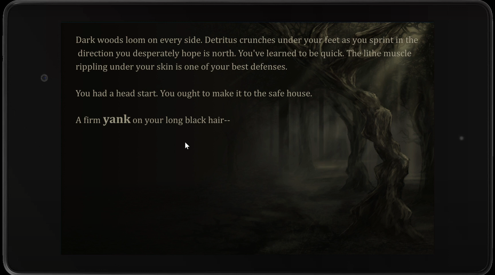
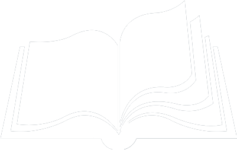

Screenshots
1 / 2

2 / 2

Multimodal Interactive Fiction
TAILS is a multimodal Interactive Fiction concept, created to make interactive fiction more immersive. Using a story from Twine we implemented multiple modalities in Unity. We added text-to-speech from Android, music using Director Musices and vibrotactile feedback using Unity3D. To evaluate the concept a study with six expert participants was conducted where they were asked to compare the text based story with the TAILS application. Although most of the participants preferred the multimodal experience of the story over the unimodal version, the synthesized voice was perceived to be unpleasant and failing to describe the emotions of the content.
Taking into consideration the limited time and resources allotted to this project we set out to create a simple prototype that demonstrates the potential of the TAILS concept. To develop this prototype we chose a single Twine story, Invasion by Cat Manning*. This story was chosen after examining a multitude of different Twine projects, evaluating them on criteria such as duration, complexity, interactivity and content accessibility. The platform we decided to focus on is Android tablets, these tablets were chosen since we required haptic feedback, large readable text and text-to-speech support.
The default compiler for Twine exports stories into HTML. However, since HTML was suboptimal for our technical requirements we opted to use Cradle, an open-source Unity Twine compiler developed by Doron Assayas Terre. By using Cradle we were able to develop our prototype using Unity as our main development environment. In addition to Unity, we used the Azure Text Analytics API to extract sentiment analysis scores and KTH’s Director Musices was used to modify music according to the sentiment scores.
To assess the potential of the TAILS concept the multimodal prototype was evaluated in comparison to an unmodified unimodal experience. The evaluation was performed using the combination of Think Aloud evaluation and a semi-structured interview. Six participants experienced both the unimodal and multimodal versions of the experience and shared their insights and comments on both. Each evaluation session took approximately one hour.
Think Aloud is a method which prompts subjects to talk aloud while usually performing a task. It is considered a valuable method for understanding the user’s cognitive processes during the experience and forming a task-related cognitive process model. The choice to use Think Aloud evaluation was based on the suitability of this method for time constrained projects as well as the availability of interaction designers as test participants. By using Think Aloud we attempted to gain insight into the emotional effect of the additional modalities as well as the general perception of these modalities.
The evaluation was conducted with a single user at a time in an isolated room in order to avoid distractions from external factors. The same story was used for each user, with users experiencing the same story twice. The ordering of the different versions of the story (unimodal or multimodal) was split equally between users to lessen ordering effects. Documentation of the evaluation was carried out by recording the interface while transcribing the user’s comments.
After users experienced both the unimodal and multimodal version a short semi-structured interview was conducted. The purpose of this interview was to enable the users to reflect on the different experiences, engage in guided speculation of an ideal multimodal experience and emphasize what they found enjoyable in both versions and what they found was lacking.
Developed a mod that allowed Unity to access Android functions such as Text-to-speech and Haptic Feedback, utilized in the Project.